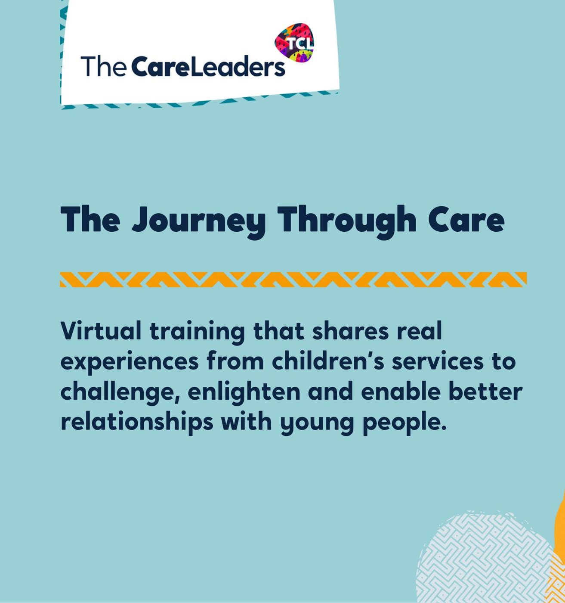
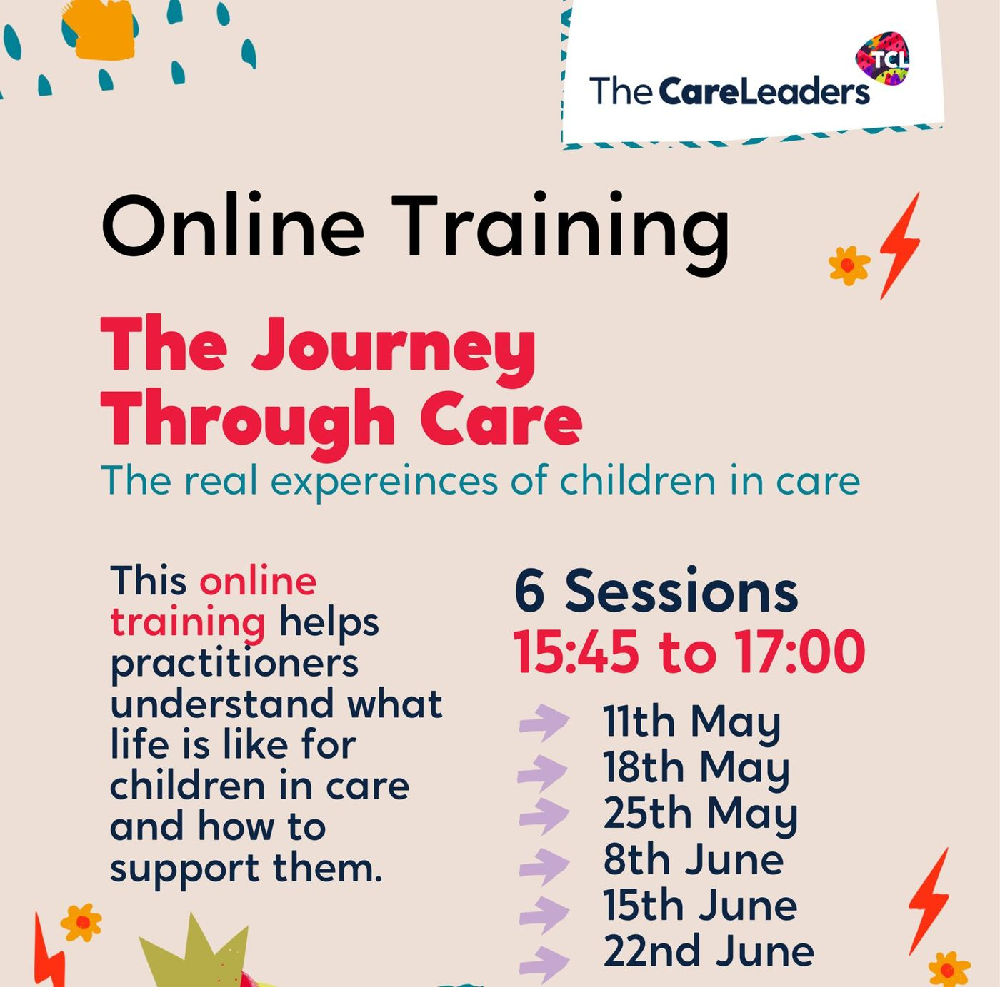
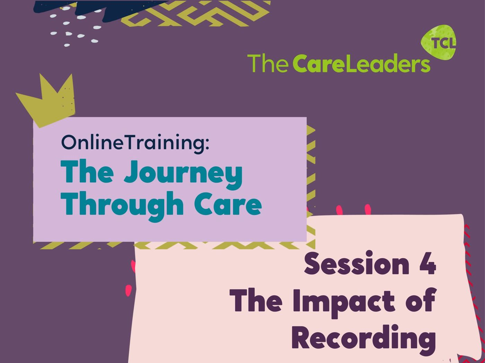
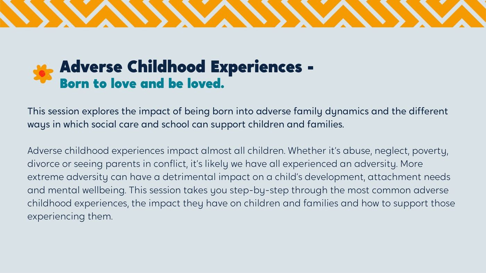

Virtual School Kent: one child’s story, three cohorts, a county’s schools
Every session followed Sam, a child whose story ran from before birth into care. By the end, around 490 staff across Kent’s schools and services could see Sam in the children in front of them.



The starting point
Virtual School Kent wanted every school in the county to understand children in care and respond to them well, not just its designated teachers. It needed training that busy staff could fit around a school day and that would change what they did in the classroom.
What we did
We adapted The Journey Through Care into six live, CPD-accredited twilight sessions and ran it for three cohorts, with a keynote event, registration, CPD certificates and a written impact report. Each session followed Sam’s story and paired it with the theory behind it: adverse childhood experiences, parenting styles, attachment, and behaviour as communication.
How we worked
Story
Sam’s story ran through every session, so each theory landed on a child staff could picture.
Theory
ACEs, attachment and child development, explained without jargon.
Tools
Recognise, Reassure and Redefine, and emotion coaching, which staff could use the next morning.
Staff noticed. “The examples, Sam, giving a real story helped,” wrote one teacher. Another said: “It was very useful to have Sam’s story to follow and then relate the points to their story.”
What changed
Around 490 people took part across the three cohorts, fewer than the 600 places planned, but with consistently high scores. After the first session, 124 of 125 people who gave feedback said it met its objectives. In the final session, all 36 did. Staff said they would pause before reacting to a distressed young person, use Recognise, Reassure and Redefine, and share the learning with colleagues.
“Luke’s knowledge and passion for this area is inspiring. All schools should have his training.”
“Luke is an amazing facilitator, so easy to listen to and very passionate.”
See the work


